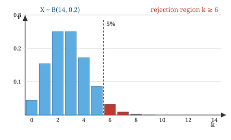

<script>if(location.hostname.endsWith('onrender.com'))location.replace('https://math-sandbox.pages.dev'+location.pathname+location.search+location.hash)</script>
<section class="theory" data-section="S2-1.1">
<h2>1.1 Introduction to hypothesis testing</h2>
<p class="src">Based on Cambridge International AS &amp; A Level Mathematics: Probability &amp; Statistics 2 Coursebook (Jayne Kranat), Chapter 1 Hypothesis testing, printed pp.3–13 (Key points 1.1–1.5, Worked examples 1.1–1.5, Exercise 1A). Own wording and new numbers. One-tailed tests only: two-tailed tests are in Section 1.2, and Type I and Type II errors are in Section 1.3.</p>
<p class="key-words"><strong>Key words:</strong> <em>hypothesis test</em>, <em>null hypothesis</em>, <em>alternative hypothesis</em>, <em>significance level</em>, <em>critical region</em>, <em>rejection region</em>, <em>acceptance region</em>, <em>critical value</em>, <em>test statistic</em></p>
<h3>Claims, chance and a significance level</h3>
<p>A <strong>hypothesis</strong> is a claim believed or suspected to be true. A <strong>hypothesis test</strong> investigates whether an observed result could reasonably have happened by chance, or whether the probability of it happening by chance is small enough to be called statistically significant. A test cannot prove a claim with certainty. If that probability is very small, we say that there is sufficient evidence to reject the claim.</p>
<p>The <strong>significance level</strong> is the probability of rejecting a claim. A value of 5% is used often, but other levels such as 10% or 1% also appear. The significance level determines a cut-off on the graph of the probabilities under the claim. The range of values at which the claim is rejected is the <strong>critical region</strong>, also called the <strong>rejection region</strong>. The remaining values form the <strong>acceptance region</strong>. The value at which you change from accepting to rejecting the claim is the <strong>critical value</strong>.</p>
<p><strong>Key point.</strong> The significance level is the probability of rejecting a claim. The critical (or rejection) region is the set of values at which the claim is rejected, and the critical value is the boundary between accepting and rejecting.</p>
<h3>Null and alternative hypotheses</h3>
<p>In a hypothesis test the claim being tested is the <strong>null hypothesis</strong>, written \(H_0\). If you are not going to accept \(H_0\), you must have an <strong>alternative hypothesis</strong> to accept, written \(H_1\). Both hypotheses are expressed in terms of a parameter, such as a probability \(p\) or a mean. The null hypothesis is the default value of the parameter (the usual, or currently accepted, value). The alternative hypothesis is the direction of the change that is being claimed, for example \(p\lt 0.4\) or \(p\gt 0.2\).</p>
<p>The examples in this section are one-tailed: the critical region lies in only one tail of the distribution. Two-tailed tests, in which \(H_1\) uses \(\neq\) and the significance level is shared between both tails, are treated in Section 1.2.</p>
<p><strong>Key point.</strong> \(H_0\) is the claim being tested, expressed as a parameter equal to its usual value. \(H_1\) is the alternative, expressed as a change in that parameter.</p>
<h3>The test statistic and the procedure</h3>
<p>You are not interested in the probability of one exact outcome, but in the probability of a tail that includes that outcome and all more extreme values. That tail probability, calculated from the sample data, is the <strong>test statistic</strong> in this chapter. You compare it with the significance level: if the tail probability is smaller than the significance level, you reject \(H_0\); otherwise you accept \(H_0\). The conclusion must be written in the context of the question, and must not claim that the test has proved something. Phrases such as “there is sufficient evidence that …” or “there is insufficient evidence that …” are appropriate.</p>
<p><strong>Key point.</strong> The test statistic is the tail probability calculated from the sample. The critical region is the set of values for which \(H_0\) is rejected, and the critical value is the boundary of that region.</p>
<p><strong>Key point.</strong> To carry out a hypothesis test: define the random variable and its parameters; state \(H_0\) and \(H_1\); determine the critical region (or compare the test statistic with the significance level); write the conclusion in context.</p>
<div class="worked-example">
<h4>Worked example 1: A binomial test, evaluated directly</h4>
<p class="src">Book: Worked example 1.1, pp.6–7; new numbers</p>
<p>Experience has shown that 40% of drivers crash on a particular racing simulator. After a training programme, 16 drivers use the simulator and 2 of them crash. Test, at the 5% significance level, whether the training programme has reduced the proportion who crash. What would you conclude if instead 3 of the 16 drivers crashed? What would you conclude in that case at the 10% significance level?</p>
<ol class="steps">
<li>Let \(X\) be the number of the 16 drivers who crash. Under the usual proportion, \(X\sim\mathrm{B}(16,0.4)\). The hypotheses are \(H_0\colon p=0.4\) and \(H_1\colon p\lt 0.4\). <span class="mark">B1</span></li>
<li>The test statistic is the lower tail \(\mathrm{P}(X\leqslant 2)\). By the binomial formula,
\[\mathrm{P}(X\leqslant 2)=\left(\dfrac{3}{5}\right)^{16}+16\left(\dfrac{2}{5}\right)\left(\dfrac{3}{5}\right)^{15}+\dfrac{16\times 15}{2}\left(\dfrac{2}{5}\right)^{2}\left(\dfrac{3}{5}\right)^{14}=0.0183\]
to 3 significant figures. This is less than 5%, so reject \(H_0\). There is sufficient evidence, at the 5% level, that the proportion who crash has decreased. <span class="mark">M1 A1</span></li>
<li>If 3 drivers crash, \(\mathrm{P}(X\leqslant 3)=0.0651\) to 3 significant figures, which is greater than 5%, so accept \(H_0\) at the 5% level: there is insufficient evidence of a decrease. The same probability is less than 10%, so at the 10% level you would reject \(H_0\) and conclude that there is sufficient evidence of a decrease. <span class="mark">A1</span></li>
</ol>
<p class="final"><strong>Answer:</strong> reject \(H_0\) at 5% when 2 crash (0.0183); accept \(H_0\) at 5% when 3 crash (0.0651); reject \(H_0\) at 10% when 3 crash</p>
</div>
<p>The lower the significance level, the smaller the rejection region, and the more confident you can be of a decision to reject \(H_0\).</p>
<div class="worked-example">
<h4>Worked example 2: Finding a rejection region and a critical value</h4>
<p class="src">Book: Worked example 1.2, p.8; new numbers</p>
<p>It is suggested that 25% of a large population of birds are tagged. A researcher suspects that the proportion is lower in one woodland and plans to check a random sample of 20 birds.</p>
<p>(a) Find the rejection region at the 5% significance level, and state the critical value.</p>
<p>(b) If the critical value were 2, what would be the least integer percentage significance level that would allow the researcher to conclude that the proportion tagged is lower?</p>
<ol class="steps">
<li>Let \(X\) be the number of tagged birds in the sample. Then \(X\sim\mathrm{B}(20,0.25)\), with \(H_0\colon p=0.25\) and \(H_1\colon p\lt 0.25\). <span class="mark">B1</span></li>
<li>The rejection region is \(X\leqslant k\), where \(\mathrm{P}(X\leqslant k)\leqslant 0.05\) and \(\mathrm{P}(X\leqslant k+1)\gt 0.05\). Direct evaluation gives \(\mathrm{P}(X\leqslant 1)=0.0243\) and \(\mathrm{P}(X\leqslant 2)=0.0913\), each to 3 significant figures. So the rejection region is \(X\leqslant 1\) and the critical value is 1. <span class="mark">M1 A1</span></li>
<li>For a critical value of 2, \(\mathrm{P}(X\leqslant 2)=0.0913\lt 0.10\), so the least integer percentage significance level is 10%. <span class="mark">A1</span></li>
</ol>
<p class="final"><strong>Answer:</strong> (a) \(X\leqslant 1\), critical value 1; (b) 10%</p>
</div>
<div class="worked-example">
<h4>Worked example 3: An upper-tail binomial test</h4>
<p class="src">Book: Worked example 1.3, pp.9–10; new numbers</p>
<p>A fair four-colour spinner is supposed to land on red with probability 0.2. In 14 spins it lands on red 6 times. Test at the 5% significance level whether the spinner is biased towards red.</p>
<ol class="steps">
<li>Let \(X\) be the number of red landings. Then \(X\sim\mathrm{B}(14,0.2)\), with \(H_0\colon p=0.2\) and \(H_1\colon p\gt 0.2\). <span class="mark">B1</span></li>
<li>The test statistic is the upper tail \(\mathrm{P}(X\geqslant 6)=1-\mathrm{P}(X\leqslant 5)=0.0439\) to 3 significant figures. <span class="mark">M1 A1</span></li>
<li>This is less than 5%, so reject \(H_0\). There is sufficient evidence, at the 5% level, that the spinner is biased towards red. <span class="mark">A1</span></li>
</ol>
<p></p>
<p>The shaded bars in the diagram form the rejection region. The probability 0.0439 lies entirely in that 5% tail, so \(H_0\) is rejected. If the spinner had landed on red only 5 times, then \(\mathrm{P}(X\geqslant 5)=0.130\) to 3 significant figures, which is greater than 5%, and \(H_0\) would be accepted.</p>
<p class="final"><strong>Answer:</strong> reject \(H_0\); sufficient evidence that the spinner is biased towards red</p>
</div>
<h3>A normal approximation for a large sample</h3>
<p>For a large sample, a binomial distribution may be approximated by a normal distribution, and the hypothesis test can then be carried out using that approximating distribution. If \(X\sim\mathrm{B}(n,p)\), the usual approximating distribution is \(\mathrm{N}(np,np(1-p))\), provided the conditions for the approximation are suitable. Because \(X\) is discrete, a continuity correction is required: for example, \(\mathrm{P}(X\leqslant k)\) is approximated by \(\mathrm{P}(Y\lt k+\frac{1}{2})\), and \(\mathrm{P}(X\geqslant k)\) by \(\mathrm{P}(Y\gt k-\frac{1}{2})\), where \(Y\) is the approximating normal variable.</p>
<div class="worked-example">
<h4>Worked example 4: A lower-tail test with a normal approximation</h4>
<p class="src">Book: Worked example 1.4, pp.10–11; new numbers</p>
<p>A candidate was elected with the support of 45% of a club’s members. Later, in a random sample of 160 members, 61 said they would still support the candidate. Using a suitable approximating distribution, test at the 5% significance level the claim that the candidate now has less support.</p>
<ol class="steps">
<li>Let \(X\) be the number in the sample who still support the candidate. Then \(X\sim\mathrm{B}(160,0.45)\). Here \(np=72\) and \(np(1-p)=39.6\), so \(X\) is approximated by \(Y\sim\mathrm{N}(72,39.6)\). The hypotheses are \(H_0\colon p=0.45\) and \(H_1\colon p\lt 0.45\). <span class="mark">B1</span></li>
<li>The test statistic is \(\mathrm{P}(X\leqslant 61)\approx\mathrm{P}(Y\lt 61.5)\). Standardising,
\[z=\frac{61.5-72}{\sqrt{39.6}}=-1.669\]
to 4 significant figures. So \(\mathrm{P}(Y\lt 61.5)=\Phi(-1.669)=0.0476\) to 3 significant figures. <span class="mark">M1 A1</span></li>
<li>This is less than 5%, so reject \(H_0\). There is sufficient evidence, at the 5% level, that the candidate now has less support. <span class="mark">A1</span></li>
</ol>
<p class="final"><strong>Answer:</strong> reject \(H_0\); sufficient evidence of less support (0.0476)</p>
</div>
<div class="worked-example">
<h4>Worked example 5: An upper-tail test and a critical value</h4>
<p class="src">Book: Worked example 1.5, pp.11–12; new numbers</p>
<p>Past records show that 40% of people react positively to a treatment. The makers of a new treatment claim that a higher percentage will react positively. In a random sample of 150 people, 70 react positively.</p>
<p>(a) Using a suitable approximating distribution, test the claim at the 5% significance level.</p>
<p>(b) Find the critical value of this test.</p>
<ol class="steps">
<li>Let \(X\) be the number who react positively. Then \(X\sim\mathrm{B}(150,0.4)\), so \(np=60\) and \(np(1-p)=36\), and \(X\) is approximated by \(Y\sim\mathrm{N}(60,36)\). The hypotheses are \(H_0\colon p=0.4\) and \(H_1\colon p\gt 0.4\). <span class="mark">B1</span></li>
<li>\(\mathrm{P}(X\geqslant 70)\approx\mathrm{P}(Y\gt 69.5)\). Then
\[z=\frac{69.5-60}{\sqrt{36}}=1.58\]
to 3 significant figures, and \(\mathrm{P}(Y\gt 69.5)=1-\Phi(1.5833\ldots)=0.0567\) to 3 significant figures. This is greater than 5%, so accept \(H_0\). There is insufficient evidence, at the 5% level, to support the makers’ claim. <span class="mark">M1 A1</span></li>
<li>The critical value is the smallest integer \(c\) for which the approximated tail \(\mathrm{P}(X\geqslant c)\) is less than 5%. The calculation in (a) shows that 70 is not in the rejection region. For \(c=71\),
\[\mathrm{P}(X\geqslant 71)\approx\mathrm{P}(Y\gt 70.5),\qquad z=\frac{70.5-60}{6}=1.75,\qquad 1-\Phi(1.75)=0.0401,\]
which is less than 5%. So the critical value is 71. <span class="mark">M1 A1</span></li>
</ol>
<p class="final"><strong>Answer:</strong> (a) accept \(H_0\); insufficient evidence for the claim (0.0567); (b) 71</p>
</div>
<h3>Common mistakes</h3>
<ul>
<li>Comparing a single-point probability \(\mathrm{P}(X=k)\) with the significance level, instead of a tail that includes all more extreme values.</li>
<li>Writing a conclusion that claims the test has proved a hypothesis, rather than that there is (or is not) sufficient evidence in context.</li>
<li>Forgetting the continuity correction when a binomial distribution is approximated by a normal distribution.</li>
<li>Using the wrong tail of the distribution, or writing \(H_1\) in the opposite direction to the claim being tested.</li>
</ul>
<h3>Quick checks</h3>
<div class="quick-check">
<h4>Quick check 1</h4>
<p>Given that \(X\sim\mathrm{B}(10,0.3)\), find \(\mathrm{P}(X\leqslant 1)\), correct to 3 significant figures.</p>
<details><summary>Worked solution</summary>
<ol class="steps">
<li>\(\mathrm{P}(X\leqslant 1)=(0.7)^{10}+10(0.3)(0.7)^{9}=0.149\) to 3 significant figures.</li>
</ol>
<p class="final"><strong>Answer:</strong> \(0.149\)</p>
</details>
</div>
<div class="quick-check">
<h4>Quick check 2</h4>
<p>Given that \(X\sim\mathrm{B}(12,0.2)\), find \(\mathrm{P}(X\geqslant 6)\), correct to 3 significant figures.</p>
<details><summary>Worked solution</summary>
<ol class="steps">
<li>\(\mathrm{P}(X\geqslant 6)=1-\mathrm{P}(X\leqslant 5)=0.0194\) to 3 significant figures.</li>
</ol>
<p class="final"><strong>Answer:</strong> \(0.0194\)</p>
</details>
</div>
<div class="quick-check">
<h4>Quick check 3</h4>
<p>\(X\sim\mathrm{B}(80,0.4)\) is approximated by a normal distribution. Using a continuity correction, find the standardised \(z\)-value used to approximate \(\mathrm{P}(X\leqslant 24)\), correct to 3 significant figures.</p>
<details><summary>Worked solution</summary>
<ol class="steps">
<li>\(np=32\) and \(np(1-p)=19.2\). Then \(z=\dfrac{24.5-32}{\sqrt{19.2}}=-1.71\) to 3 significant figures.</li>
</ol>
<p class="final"><strong>Answer:</strong> \(-1.71\)</p>
</details>
</div>
<div class="quick-check">
<h4>Quick check 4</h4>
<p>A binomial random variable \(X\sim\mathrm{B}(120,0.55)\) is to be approximated by a normal distribution. Write down the mean of the approximating distribution.</p>
<details><summary>Worked solution</summary>
<ol class="steps">
<li>The mean is \(np=120\times 0.55=66\).</li>
</ol>
<p class="final"><strong>Answer:</strong> \(66\)</p>
</details>
</div>
<p class="marks-key"><strong>Marks:</strong> M = method, A = accurate answer (depends on M), B = independent mark. Marks on worked examples are illustrative, not official. Give probabilities correct to 3 significant figures unless an exact value is available. Compare a tail probability with the significance level, apply a continuity correction in a normal approximation, and write the conclusion in context without claiming that a hypothesis has been proved.</p>
</section>
